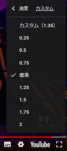
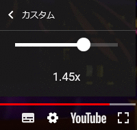

YouTube、0.05倍速刻みの再生速度調節機能をテスト中 42
ストーリー by headless
調節 部門より
調節 部門より
YouTubeが0.05倍速刻みで再生速度を変更する機能をテストしているようだ(Android Policeの記事)。
現在、YouTubeでは設定の「速度」メニューから0.25倍速～2倍速まで0.25倍速刻みで再生速度を選択できる。テスト対象になると「速度」メニューに「カスタム」というリンクが追加され、クリックするとスライダーで再生速度を設定できるようになる。設定範囲は現在と同じ0.25倍速～2倍速となっている。テスト対象は動画を開いた時にランダムで割り当てられているようで、同じ動画でも再読み込みすると「カスタム」が追加されたり、消えたりすることが確認できた。
YouTubeの「速度」メニューには昨年末ごろ1.75倍速が追加され、完全に0.25倍速刻みとなった。カスタム速度設定が追加されれば、さらに細かい速度調節が可能となる。個人的には長時間の発表会や記者会見などをチェックするときに速度を上げる程度だが、2倍速でも遅いと思うこともある。スラドの皆さんはYouTubeの速度調節機能を使用しているだろうか。活用法などもあればコメントしてほしい。
現在、YouTubeでは設定の「速度」メニューから0.25倍速～2倍速まで0.25倍速刻みで再生速度を選択できる。テスト対象になると「速度」メニューに「カスタム」というリンクが追加され、クリックするとスライダーで再生速度を設定できるようになる。設定範囲は現在と同じ0.25倍速～2倍速となっている。テスト対象は動画を開いた時にランダムで割り当てられているようで、同じ動画でも再読み込みすると「カスタム」が追加されたり、消えたりすることが確認できた。
YouTubeの「速度」メニューには昨年末ごろ1.75倍速が追加され、完全に0.25倍速刻みとなった。カスタム速度設定が追加されれば、さらに細かい速度調節が可能となる。個人的には長時間の発表会や記者会見などをチェックするときに速度を上げる程度だが、2倍速でも遅いと思うこともある。スラドの皆さんはYouTubeの速度調節機能を使用しているだろうか。活用法などもあればコメントしてほしい。
|  | ⇒ |  |
{kind=link}
{kind=link}
速度の倍率より (スコア:5, すばらしい洞察)
再生時間で指定させて欲しいです
12分の動画を10分で再生とか